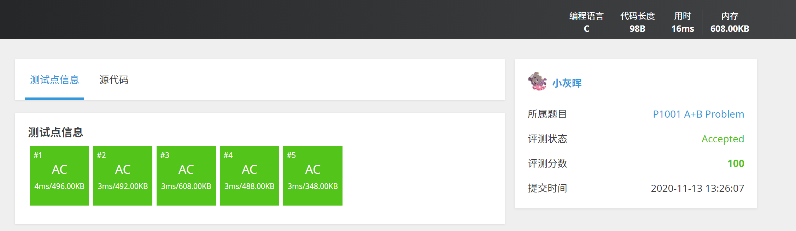

2020.11.13 前言 & 顺序结构
这里是成电微软学生俱乐部 2020 年度 C 语言学习 Guideline。虽然不少专业在大一上已经开设了 C 语言程序设计相关课程，但是仍有其他专业的同学没有学习 C 语言（比如计院 hhhh）。
本系列文章将用六个星期的时间讲述六个专题——————的题目。这些专题覆盖了编程入门（不仅是 C 语言）的最基本的要素，如果你已经精通了 C 语言（呃，是七天精通的那种精通），又正好在学习其他语言（如 Python、Java 亦或是 C# 等），你也可以参与其中，在学习的同时练习语法。
如果你还没有学习 C 语言，推荐翁恺 C 语言程序编程全系列，在 MOOC、bilibili 等视频网站上都能找到。（顺便安利翁恺老师的其他课程都很不错，老师很有人格魅力，声音还好听，女朋友就是看他的 Java 入门）。
不过，需要注意的是，每周一题专题并不是按照翁恺老师的 MOOC 的学习进度而设置的，而是使用了洛谷的程序设计入门题单。
洛谷是一个在线评测平台（Online Judge, OJ）。和平常的 做题-对答案 不同，在 OJ 中，你可以在线提交程序源代码（一般不限于 C 语言，根据系 OJ 支持情况而定），系统对源代码进行编译和执行，并通过预先设计的 测试数据（又称测试点）来检验程序源代码的正确性。OJ 常用于算法竞赛（如 OI、ACM 竞赛）中，也有面向求职者的 Leetcode，我们学校计算机学院的码图、软件学院的 OSTEC。

对于洛谷，在提交代码以后，如果测试点显示 AC(accepted)，表示你提交的代码在这个测试点的输入下的输出与答案相同。如果所有测试点均为 AC，则系统认为你提交的代码是正确的，你会在右边收获一个绿色的 Accepted，你的个人主页的“通过”数也会 +1。
顺便一提，当代码复杂起来，如果想要严格证明代码、或者说算法的正确性，这是相当困难的。因此 OJ 普遍采用的方法是，使用多组测试样例（在 ACM 竞赛中，甚至可能上百、上千）来尽可能找到你的代码的错误。
回归正题，我们第一周的题单是顺序结构。题单中有 12 题，但你只需要完成 P5704 【深基2.例6】字母转换 和 P5708 【深基2.习2】三角形面积 即可。学有余力的同学可以选做题单中的剩下题目。六周以后，总共完成了 12 题及以上的 MSCer，将在年会获得精美小礼品一份~
下周五晚八点前，我会提供这两道题目的 C 语言题解和简单讲解，同时放出下一周的题单。如果在完成过程中遇到了任何问题，也可以在 MSC 群里放出代码，大家一起讨论（推荐使用 https://paste.ubuntu.com/ 粘贴代码，而不是把代码发到 QQ 聊天框、截图甚至使用手机拍电脑）。
最后，如果对这个版块有好的建议或意见（如题解不够详细、需要线下讲座等），欢迎私聊小灰晖~